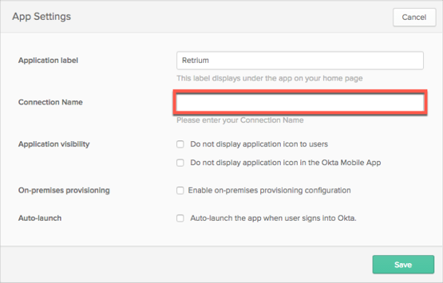

Contact the Retrium Support team at support@retrium.com and request that they enable SAML 2.0 for your account.
Along with your request, provide the Retrium Support team with the domain for your enterprise email account.
The Retrium Support team will provide you with a Connection Name.
In Okta, select the General tab for the Retrium app, then click Edit.
Enter the Connection Name provided to you by Retrium into the corresponding field.
Click Save.

Reply to the email from Retrium and provide the following information:
Login URL/SignOn URL: Copy and paste the following:
Sign into the Okta Admin Dashboard to generate this variable.
x.509 Certificate: Download, then upload the following in .cert format:
Sign into the Okta Admin Dashboard to generate this variable.
The Retrium Support team will process your request. After receiving a confirmation email, you can start assigning people to the application.
Notes:
IDP-initiated flows, SP-initiated flows, and Just In Time (JIT) provisioning are all supported.